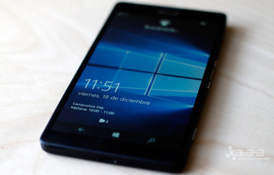
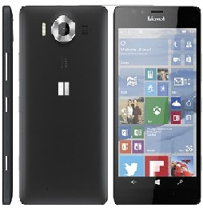
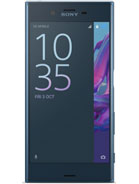
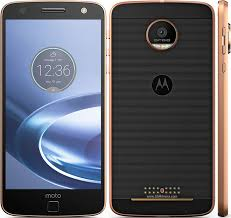
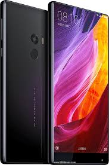
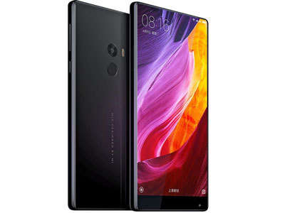

Este poderoso smartphone cuenta con las siguientes características de hardware:
CARACTERISTICAS DEL PROCESADOR
Un procesador Quad-core de 1.5 Ghz Cortex-A53 & Quad-core de 2.0 Ghz Cortex-A57
Chipset Qualcomm MSM8994 Snapdragon 810
GPU Adreno 430
3GB de RAM y 32GB de memoria interna. Ranura de expansión de memoria microSD de hasta 256GB.
Pantalla de 5.7 pulgadas AMOLED de 16M colores. Resolución Full HD 1440×2560. 518 pixeles de densidad. Protección Corning Gorilla Glass 4.
CAMARA
Cámara principal de 20MP, apertura f/1.9, 26mm de distancia focal, óptica Carl Zeiss, estabilizador de imagen óptico, flash triple LED tipo RGB, sensor fotográfico de 1/2.4″, tecnología PureView. Grabación de video a 2160p@30fps. Cámara secundaria de 5MP, apertura f/2.4 con grabación a 1080p.
Wi-Fi 802.11 a/b/g/n/ac, banda dual, DLNA, hotspot
Bluetooth v4.1, A2DP
A-GPS, GLONASS, NFC, radio FM
Carga inalámbrica (soporte para Qi)
Escáner de iris
Tipo de SIM: nanoSIM
Conectores: USB C v3.1, jack para audífonos 3.5mm
Batería de 3300 mAh no removible. Carga rápida.
Dimensiones: 151.9×78.4×8.1mm. Peso 165 gr.


Sony Xperia XZ
PROCESADOR
id="txt">Procesador Quad Core de 2×2.15Ghz Krio y 2×1.6Ghz Krio
Adreno 530.
Qualcomm MSM8996 Snapdragon 820.
3GB de RAM y 32/64GB de memoria interna. Posee ranura de expansión de memoria externa microSD con capacidad de hasta 256GB.
Pantalla de 5.2 pulgadas IPS LCD de 16M colores. Resolución 1080×1920 pixeles. 424 pixeles de densidad. Protección Corning Gorilla Glass 4.
Camara
Cámara de 23MP con apertura f/2.0 y distancia focal de 24mm. EIS (estabilizador de imagen electrónico), flash LED, sensor de 1/2.3″ autoenfoque por detección de fase y láser. Grabación de video a 2160p@30fps, 1080@30/60fps. Sensor RGBC-IR mejora el balance de blancos y captura colores naturalmente vibrantes.
Cámara secundaria de 13MP con apertura f/2.0, distancia focal de 22mm.
Sistema operativo: Android v6.0.1 actualizable a v7.0 (Nougat).
Wi-Fi 802.11 a/b/g/n/ac, Wi-Fi Direct, banda dual, hotspot.
Bluetooth v4.1, A2DP, LE, aptX
A-GPS, GLONASS, BFS, NFC.
Carga rápida de bateria (Quick Charge 3.0)
Lector de huella dactilar
Resistente al agua y polvo con certificación IP68.
Sonido de 24-bit/192kHz
Parlantes estéreo.
Tipo de SIM: Nano-SIM. Opción Dual SIM (nanoSIM)
Conectores: USB-C, jack para audífonos 3.5mm.
Batería de 2900 mAh
Dimensiones: 146 x 72 x 8.1mm.
Peso 161gr.

Motorola Moto Z Force
Este poderoso smartphone cuenta con las siguientes características de hardware:
PROCESADOR
Procesador Quad Core de 2×2.15Ghz Krio y 2×1.6Ghz Krio (modelo USA – Moto Z Droid). Quad Core de 2×2.18Ghz Krio y 2×1.6Ghz Krio (modelo internacional)
Adreno 530.
Qualcomm MSM8996 Snapdragon 820.
4GB de RAM y 32/64GB de memoria interna. Posee ranura de expansión de memoria externa microSD con capacidad de hasta 256GB.
Pantalla de 5.5 pulgadas AMOLED de 16M colores. Resolución 1440×2560 pixeles. 535 pixeles de densidad. Pantalla inastillable.
CAMARA
Cámara de 21MP con apertura f/1.8. OIS (estabilizador de imagen óptico), flash dual-LED, autoenfoque láser. Grabación de video a 2160p@30fps, 1080@60fps.
Cámara secundaria de 5MP con apertura f/2.2, flash LED.
SISTEMA
Sistema operativo: Android v6.0.1 actualizable a v7.0 (Nougat).
Redes: GSM / CDMA / HSPA / EVDO / LTE
2G:
GSM 850 / 900 / 1800 / 1900 – EMEA, USA
CDMA 800 / 1900 – USA
3G:
HSDPA 850 / 900 / 1900 / 2100 – USA
CDMA2000 1xEV-DO – USA
4G:
LTE band 2(1900), 3(1800), 4(1700/2100), 5(850), 7(2600), 13(700) – USA
Tecnologías:
Wi-Fi 802.11 a/b/g/n/ac, Wi-Fi Direct, banda dual, hotspot.
Bluetooth v4.1, A2DP, LE
A-GPS, GLONASS, NFC.
Radio FM
Carga rápida de bateria (Turbo Power)
Lector de huella dactilar
Sistema modular Moto Mods. Agrega funciones adicionales al smartphone como mejor cámara, proyector de video, parlantes potentes, batería externa. Se compran por separado.
Tipo de SIM: Nano-SIM. Opción Dual SIM (nanoSIM)
Conectores: USB-C, NO POSEE jack para audífonos 3.5mm. Incluye adaptador de 3.5mm a USB-C.
Batería de 3500 mAh
Dimensiones: 155.9 x 75.8 x 7mm.
Peso 163gr.

Xiaomi Mi Mix
Este poderoso smartphone cuenta con las siguientes características de hardware:
PROCESADOR
Procesador Quad Core de 2×2.35Ghz Krio y 2×1.9Ghz Krio.
Adreno 530.
Qualcomm MSM8996 Snapdragon 821.
4GB de RAM y 128GB de memoria interna o 6GB de RAM y 256GB de memoria interna. NO POSEE ranura de expansión de memoria.
Pantalla de 6.4 pulgadas IPS LCD de 16M colores. Resolución 1080×2040 pixeles. 362 pixeles de densidad.
CAMARA
b
Cámara de 16MP con apertura f/2.0. EIS (estabilizador de imagen electrónico), flash dual-LED, autoenfoque por detección de fase. Grabación de video a 2160p@30fps, 1080p@30fps, 720@120fps.
Cámara secundaria de 5MP
Sistema operativo: Android v6.0 actualizable a v7.1.1 (Nougat). Interfaz MIUI 8.0/8.2
Wi-Fi 802.11 a/b/g/n/ac, Wi-Fi Direct, banda dual, hotspot.
Bluetooth v4.2, A2DP, LE
A-GPS, GLONASS, BDS, NFC.
Carga rápida de bateria (Quick Charge 3.0)
Lector de huella dactilar
Tipo de SIM: Dual SIM (nanoSIM)
Conectores: USB-C, jack para audífonos 3.5mm
Batería de 4400 mAh
Dimensiones: 158.8 x 81.9 x 7.9mm.
Peso 209gr.

/

OnePlus 3T
Este poderoso smartphone cuenta con las siguientes características de hardware:
PROCESADOR
Procesador Quad Core de 2×2.35Ghz Krio y 2×1.6Ghz Krio.
Adreno 530.
Qualcomm MSM8996 Snapdragon 821.
6GB de RAM y 64/128GB de memoria interna con tecnología UFS 2.0. NO POSEE ranura de expansión de memoria.
Pantalla de 5.5 pulgadas AMOLED de 16M colores con doble capa de polarización. Resolución 1080×1920 pixeles. 401 pixeles de densidad. Protección Corning Gorilla Glass 4.
CAMARA
Cámara de 16MP con apertura f/2.0. OIS (estabilizador de imagen óptico), flash LED, autoenfoque por detección de fase. Grabación de video a 2160p@30fps, 720@120fps.
Cámara secundaria de 16MP con apertura f/2.0
Sistema operativo: Android v6.0.1 actualizable a v7.1.1 (Nougat). Interfaz Oxygen OS 4.0.2
Redes: GSM / HSPA / EVDO / LTE
2G:
GSM 850 / 900 / 1800 / 1900 – SIM 1 & SIM 2
3G:
HSDPA 850 / 900 / 1700(AWS) / 1900 / 2100 – USA
HSDPA 850 / 900 / 1900 / 2100 – Global
CDMA2000 1xEV-DO – USA
4G:
LTE band 1(2100), 2(1900), 4(1700/2100), 5(850), 7(2600), 8(900), 12(700), 17(700), 30(2300) – USA
LTE band 1(2100), 3(1800), 5(850), 7(2600), 8(900), 20(800), 38(2600), 40(2300) – Global
Procesador: Snapdragon 821 de cuatro núcleos (2.35GHz)
RAM: 4GB
GPU: Adreno 530
TECNOLOGIA
Almacenamiento: 32GB (64GB en algunos países de Asia)
Ranura microSD: Sí
Batería 3,300mAh con carga rápida Quick Charge 3.0
Carga inalámbrica: Sólo para el modelo que se vende en EE.UU.
Resistencia al agua: IP68 (hasta 1.5 metros de profundidad por hasta 30 minutos)
CAMARA
Cámara trasera: Dos de 13 megapixeles (una con captura de 71 grados y otra gran angular con captura de 125 grados) con zoom óptico 2X
Apertura de las cámaras: f/1.8 para la principal y f/2.4 para la gran angular
Cámara frontal: 5 megapixeles (gran angular con captura de 100 grados)
SISTEMA
Sistema operativo: Android 7.0 Nougat
Pantalla siempre encendida: Sí
Radio FM: Sí
Dimensiones: 148.9x71.9x7.9mm
Peso: 163 gramos
CUERPO
Cuerpo: Estructura y borde de metal con vidrio en la parte frontal (Gorilla Glass 3) y trasera (Gorilla Glass 5)
Otras características: Compatibilidad de contenido HDR 10 y Dolby Vision, apps como Netflix eliminan las barras negras de la pantalla para hacer el contenido más inmersivo, modo de cámara para capturar fotos cuadradas con diferentes funciones, Google Assistant (no habla español), Hi-Fi Quad DAC superior al del LG V20 (principalmente en algunos mercados en Asia).